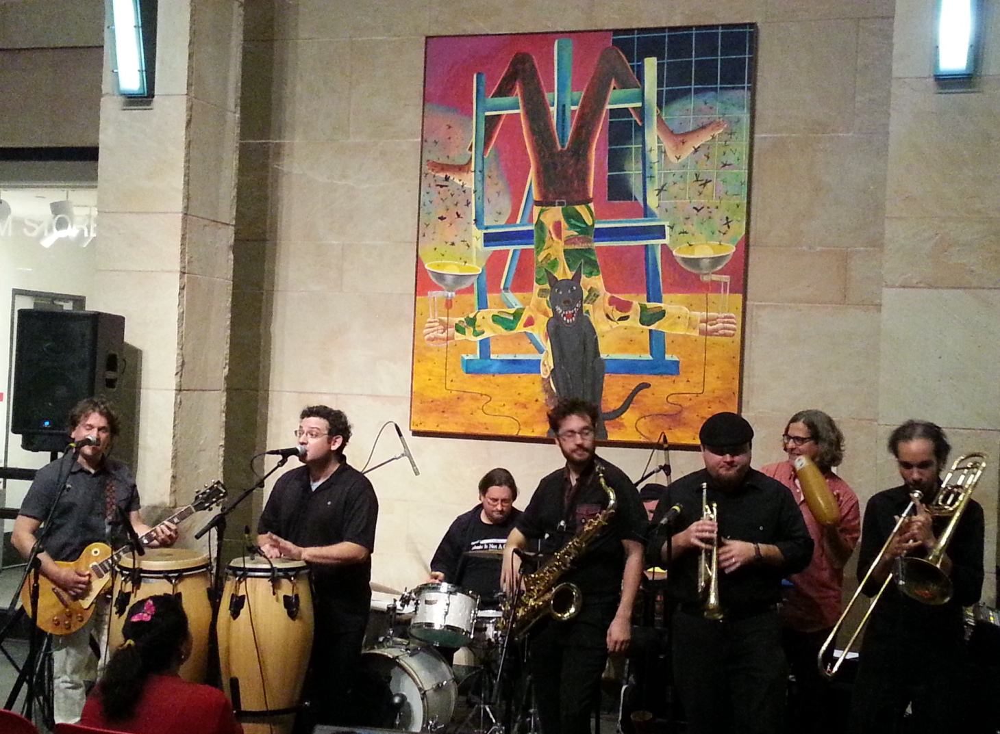
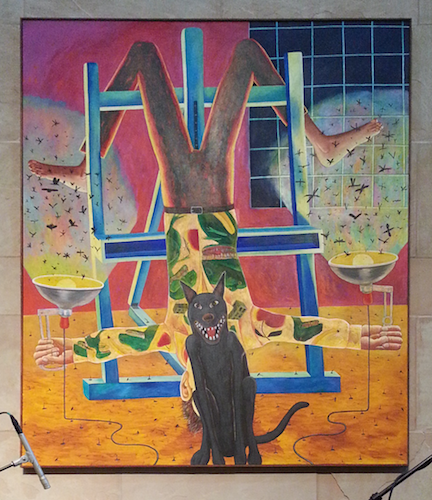

Katrina was a man-made, not a natural disaster. If that statement doesn’t fit your comfortable idea of the catastrophe , then I direct you to the many articles on the subject, like this one written on the storm’s fifth anniversary by Time Magazine.
In New Orleans we love to complain about Katrina and the incompetent authorities that make the storm such a disaster, also, bad politics, pot-holed streets, infrastructure that comes and goes as unpredictably as the weather, and national media who almost always get their New Orleans stories wrong. Recently we’ve taken to complaining about gentrification and the flood of newcomers — just the ones who don’t get that living here means tolerating loud music at the bar in your neighborhood, strange and eccentric people who make some others uncomfortable, and the general disfunction — but it’s all part of what makes New Orleans so dear to the people who love her.
Fortunately the city usually manages to change the attitudes of the clueless among the newcomers rather than allowing the well meaning but misguided to ruin the city with poorly aimed “improvements”.
In the fine old tradition of New Orleans, the changes in the wake of Katrina have been both positive and negative. One of the changes that New Orleanians have embraced is the influx of new Latino culture, especially its invigorating influence on New Orleans cuisine and New Orleans Music. Last night the Ogden Museum of Southern Art’s After Hours program featured Los Po-Boy-Citos, a New Orleans group that embodies some of the best in new Latin influenced New Orleans music.

They have an energetic Latin sound, but feature brass that recalls the traditional New Orleans brass bands you might hear at a jazz funeral or second line. The music is unique, humorous, and totally New Orleans. You can hear their rendition of Oye Mamacita here on YouTube. They began in 2006, combining old school boogaloo songs with New Orleans R&B hits. They were named Best Latin Band three years in a row at the Big Easy Awards.
By the way, the intriguing painting on the wall of the Ogden Museum’s lobby is Carpet Track by artist, Robert Warrens. Here’s a closer look:

New Orleans loves being itself, and New Orleanians love to show off their city and their culture to visitors. Come see us and enjoy the food, the art, the music, the literature, and the people — like nowhere else.